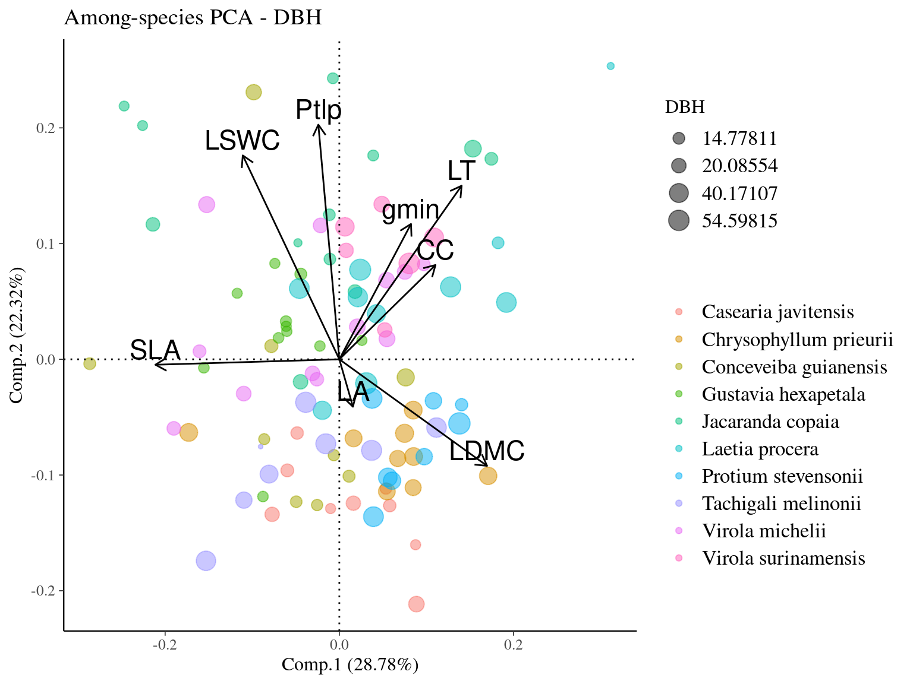
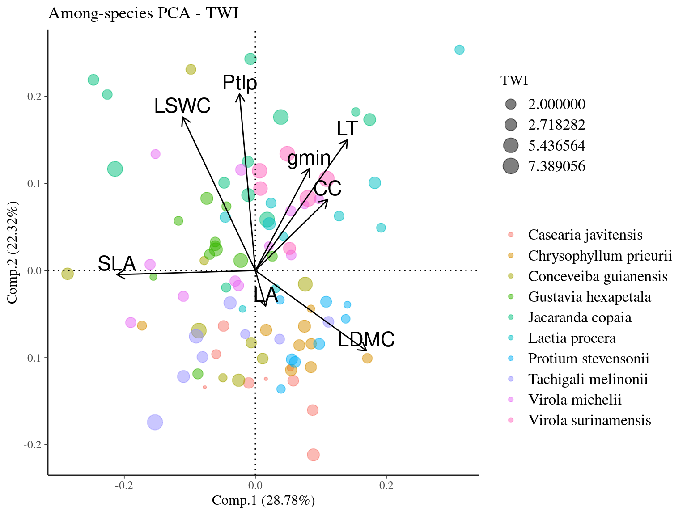

Chapter 5 Traits covariation
Subsequent analysis aimed to explore co-variations of individual traits. Specifically, we investigated individual traits co-variation at several taxonomic scales: among species, and within species.
5.1 Material
We used data from Vleminckx et al, (2021) and Krebber et al, (in prep) to obtain the average trait value per species in 94 to 102 species per trait species per trait in order to have a balanced sampling with respect to intra-species variation.
| trait | N |
|---|---|
| LSWC | 100 |
| Ptlp | 102 |
| gmin | 102 |
| LA | 94 |
| SLA | 94 |
| LT | 94 |
| CC | 94 |
5.2 Methods
We used species mean values to calculate pairwise Pearson correlation coefficients for each pair of traits. We used individual trait values minus species mean trait values to measure intraspecific variability independent of species variation. We calculated pairwise Pearson correlation coefficients for each pair of traits using individual trait values minus the species mean. Finally, we compared the absolute values of Pearson’s correlation coefficients for each pair of traits within and between species to explore the conservatism of trait coordination across scales.
5.3 Results
We observe a strong and significant correlation of trait coordination within and among species (Pearson’\(r=0645, p<10^{-6}\)), with no marked differences between carbon-related and water-related traits.
![Correlation of among- and within-species trait correlations. The X-axis represents the absolute correlations of the mean trait values of the species, while the Y-axis represents the absolute correlations of the individual trait value minus the mean trait value of the corresponding species, thus revealing the coordination of traits among and within species. Points colour indicates the type of traits implicated in the trait pairs, with either carbon-related traits (green), water-related traits (blue), or carbon- and water-related traits (red). Label indicate trait pairs. The title indicate the correlation of correlations and the associated p-value. The grey line represents the expected position of the points for a correlation of 1 for trait correlations among- and within-species. Leaf traits include specific leaf area (SLA), leaf fresh thickness (LT), leaf area (LA) leaf chlorophyll content (CC), leaf saturated water content (LSWC), leaf water potential at which leaf cells lose turgor (Ptlp), and leaf minimum conductance (gmin). Within-species trait values originate from this study including 100 individuals from 10 species, while among trait values originate from Vleminckx *et al,* (2021) and Krebber *et al,* (in prep) with 94 to 102 species per trait. All trait values have been measured using the same protocol in the Paracou research station.](hydroITV_files/figure-html/corspind-1.png)
Figure 5.1: Correlation of among- and within-species trait correlations. The X-axis represents the absolute correlations of the mean trait values of the species, while the Y-axis represents the absolute correlations of the individual trait value minus the mean trait value of the corresponding species, thus revealing the coordination of traits among and within species. Points colour indicates the type of traits implicated in the trait pairs, with either carbon-related traits (green), water-related traits (blue), or carbon- and water-related traits (red). Label indicate trait pairs. The title indicate the correlation of correlations and the associated p-value. The grey line represents the expected position of the points for a correlation of 1 for trait correlations among- and within-species. Leaf traits include specific leaf area (SLA), leaf fresh thickness (LT), leaf area (LA) leaf chlorophyll content (CC), leaf saturated water content (LSWC), leaf water potential at which leaf cells lose turgor (Ptlp), and leaf minimum conductance (gmin). Within-species trait values originate from this study including 100 individuals from 10 species, while among trait values originate from Vleminckx et al, (2021) and Krebber et al, (in prep) with 94 to 102 species per trait. All trait values have been measured using the same protocol in the Paracou research station.
5.4 Discussion
Carbon- and water-related traits coordination into ecological strategies are consistent within and among species (see Schmitt et al. (2020) for discussion about consistent strategies across levels).
5.5 SIs
We performed a Principal Component Analysis to investigate the multivariate trait covariation. Using the among PCA, a “classic” PCA, we aim to evaluate trait syndroms characterizing species strategies. For the within PCA, all the gravity centers are placed back at the origin and the individuals are being represented with a maximal variance. We eliminate the species effect to study the individual strategies. The among-PCA searches the axes at the center of gravity and emphasizes on the differences between groups (here, species) whereas the within-PCA searches for the shared-axes in each group.
Figure 5.2: Correlation of leaf traits across individuals in 10 Neotropical tree species. Leaf traits include specific leaf area (SLA), leaf dry matter content (LDMC), leaf fresh thickness (LT), leaf area (LA) leaf chlorophyll content (CC), leaf saturated water content (LSWC), leaf water potential at which leaf cells lose turgor (Ptlp), and leaf minimum conductance (gmin).
Figure 5.3: Among (A) and Within-species (B) principal component analysis (A - PCA and B - wPCA) of leaf traits across individuals in 10 Neotropical tree species. Circle colors indicate the species. Leaf traits include specific leaf area (SLA), leaf dry matter content (LDMC), leaf fresh thickness (LT), leaf area (LA) leaf chlorophyll content (CC), leaf saturated water content (LSWC), leaf water potential at which leaf cells lose turgor (Ptlp), and leaf minimum conductance (Gmin).



References
Schmitt, S., Hérault, B., Ducouret, É., Baranger, A., Tysklind, N., Heuertz, M., Marcon, É., Cazal, S.O. & Derroire, G. (2020). Topography consistently drives intra- and inter-specific leaf trait variation within tree species complexes in a Neotropical forest. Oikos, 129, 1521–1530. Retrieved from https://onlinelibrary.wiley.com/doi/abs/10.1111/oik.07488 https://onlinelibrary.wiley.com/doi/10.1111/oik.07488